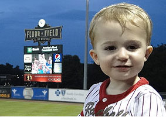
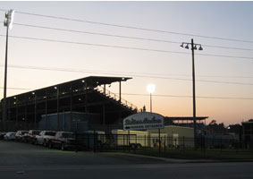
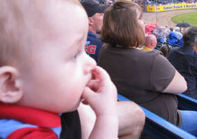

Knowing when the home team is at home is of paramount importance to anyone traveling to one of Major League Baseball's 30 ballparks, so creating calendar schedules for them that show the exact dates each team is playing at their homes in 2018 is certainly a useful aid to any on-the-road baseball fan and trip planner. That's what Baseball Pilgrimages has done, and you can see the team by team and ballpark by ballpark results on the Major League Baseball Home Schedules page, which also includes links to each team's and ballpark's monthly schedule.
Two hundred sixty three. Spelled out, that's how many ballparks are collectively being used by teams in the various professional baseball leagues in 2018. The complete pro ballpark list lists the 263 in a state-by-state format, so you'll know where to find them in the 47 states that have at least one (plus in four Canadian provinces too). From Aberdeen (MD) to Zebulon (NC), all ballparks used by the major leagues, minor leagues and independent leagues are listed, along with their capacity and year of opening, on the only page on the Internet that you'll find all the current pro ballparks detailed.
Combining spring training and the regular season, MLB teams sold 76,205,902 tickets in 2017 to games played in their ballparks and regular spring training facilities, of which there are 23. Major League baseball was played in 31 ballparks during the regular season and the total number of officially counted game dates from the beginning of spring training on February 24 through the end of the regular season on October 1 was 2,932. You can see how many fans each team drew to their regular season and spring training ballpark at:

Fluor Field in Greenville - July 20, 2013
My second son, at age almost 21 months, saw his first baseball game in a South Atlantic League ballpark in South Carolina in the summer of 2013. Greenville's Fluor Field, a prime example of the modern and family-friendly ballpark, was the location in which Walker mostly roamed while the Lexington Legends beat the Greenville Drive. My toddler's first time seeing America's pastime in person is recounted, with a tip of the cap given to the splendid 'lil ballpark that is responsible for baseball's success in the Palmetto State city that's best known as the hometown of “Shoeless” Joe Jackson. Full Article >>

Drillers Stadium Loses the Drillers
The cliché is true. If you build it, they will come. It being a ballpark and they being a baseball team. Of course, "they" have to leave somewhere to arrive and when that happens a current ballpark becomes a former one. That happened quite a bit in the decade that is just about to end; 63 times in fact. That's counting major and affiliated minor league teams, one of which is the Tulsa Drillers, who left their self-titled stadium in the county fairgrounds for new corporate
sponsored downtown digs. Full Article >>

McCormick Field in Asheville - July 5, 2009
My 8-month old son saw his first baseball game on the evening of July 5th. The venue was an old one: Asheville's McCormick Field, established in 1924. Zachary, at 244 days, enjoyed the Tourists' 7-6 victory over the visiting Charleston RiverDogs primarily from the comforts of his mother's lap in a bleacher seat behind the home team dugout, where our rookie in life enjoyed the old ball game on a night in which rain drizzled intermittently during his inaugural immersion in America’s national pastime. Full Article >>